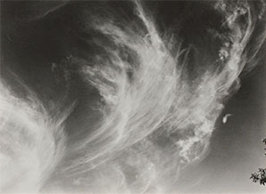

李永

表面的語言：
自黃鶴洞「萬物市場」始的招牌記錄之延續與擴張
以二手傳統市場的地方性為起點。招牌透過以字體為核心的造型與可分類的詞語集合，顯露獨有氣質。由此延展至探討分裂現實的《和平與統一》，同時也持續蒐集手寫招牌。累積的工作於 Label Gallery 以個展整理，之後透過多次協作推進。於此過程中，實踐得以突破機械式重複，運用影像轉印與過往不被注意的材料，擴張邊界。如運用轉印的《鱗》與以塑膠袋為材的《寬鬆外套》，朝向以文字為素材、更為主動的造形前行。

不可還原之物：
自非線性時間通往生態倫理的感受
受朴景利詩作〈棗與蜜蜂〉啟發，我記錄植物與人造物交織的都市景象。我一直以具體對象與情境探尋抽象的概念與情感。對生與死、主體生成與解體的感性承擔成為作品主軸；伴隨對攝影存在論立場的思考，實踐透過發現並回應有機結構而得以擴張，方向亦逐步自宏大觀念收斂至日常感受。
生成中的結構：
事件的記錄與類型的發現
此系列記錄市中心遺存的殖民時期住宅。與地名相反，「忠武路」常被感知為歷史氣息濃厚之地。外部環境改變，對地方性的感知亦隨之轉變；在跨越邊界、靈活擴張的高密度網絡之中，地方性漸趨淡化，而結構的普遍特徵開始浮現。作品沿著「類型」的流動進行記錄與發現。
糾纏的線團，月白瓷
時光機不會到來。世界總是圍繞關鍵記憶一次次被重新編排。既不存在純粹的「客觀事實」，那部機器也便無用。沒有起始，也沒有完結。
若說我拍攝招牌，依作品集而論，2007 年的《萬物市場》似乎是起點——但那其實是結果，也可能是原因。再往前十年，1997—98 年修學旅行歸來，因為拍了說明文字與指示牌而被母親數落；那時我也很少拍人。更早十年，1986—87 年，我握著母親的手走在市場對面的林蔭大道上，毫不停歇地把招牌念出來。母親起初稱讚，繼而疲憊地要我停下。那時的照片已無處可尋。母親對照片沒有留戀；搬到原州時全都失了，滿月或週歲留下的一張照片也不知去向，只記得她帶去問神，說我或許會早夭。如今我已活過父親的年紀，也許算是應驗。
我也差不多如此。即使整卷底片遺失、數位原檔刪除，也能再拍。因為我並不把世界視作特定事件的連續，而感到它是「重構」的反覆。我不喜歡在空泛裡含糊其辭，但那種傾向總會浮現。總之，像線團那般把時間一股腦兒抽出並無意義。像月白瓷那樣，形態本就相同，只是觀看的方向不同。我們被造就成能感知世上並不存在的幾何「圓」。格式塔式的世界——或許正是最大的枷鎖。理想與現實之間，有一種無力。
即便失去全部照片，也不過辛苦，並非無法重來。慶大攝影系李周炯老師的混合媒材課，有一次作業是直接在底片上劃痕以擴展表現。我路過服裝學院的模特兒倉庫，從小窗裡拍攝；門上鎖，少有人進，除了那扇窗別無取景可能。我把底片都刮了便交作業。老師說：「若你能拍出完全一樣的照片，就給最高分。」我知道整體成績不佳，改變有限；但我清楚當時極為受限的條件，於是說可以。門仍舊上鎖，我也在同一位置取景，然而模特兒的位置已不同。我明白了：絕無「同一張」照片。這不僅是不可逆——構圖絕不可能相同，但那間倉庫依舊上鎖，模特兒依舊豎立。什麼也沒變。
我沒有連結的環節。我沒有夢想，因此無處可去。小學時或許寫過「科學家」，之後便不記得。之所以讀攝影，是因為某份學習資料的附刊有漂亮模特兒，其中「有前景的職業」一欄寫著活動企劃，相關科系包括攝影。我勉強列入候選。回頭看，如今攝影倒挺適合我。成摞的學習資料像新的一樣，但解答本常常指向荒唐的答案，有一天我不再信它們。不要只看外表。我也未曾認真做其他資料。我難以找到興趣；家裡只有一台 35mm 三星自動相機。幾乎是「沒有相機」地進了攝影系。這樣說或許不合時宜，但我不覺得奇怪。現在也只是因為一直做，便繼續做；或許更是如此。我既不拚命，也不擅長放棄。尋找「連結」很重要。
我把學業警告湊滿之後入伍。原想為復學時程去海軍陸戰隊，但被勸住。陸軍報名者多，我在二月入伍。到部隊後在性格欄寫：「似內向，卻又厚臉皮。」母親的反對果然有理。偏遠的生活喚醒了難得經驗的感官：閉眼比黑暗更黑，只能用手去摸索睜開的眼；體感降到零下 45℃ 時，人們彼此無語，卻會一起大笑；睡意來臨前，手臂總先變冷。黃昏的楓葉與布滿星辰的夜空——這不是修辭；透過夜視鏡看去確實無縫可尋。此後我再也沒有那樣的感受。也許我對旅遊與美食興致寡淡，正因兵役所致；辛苦鏟土之後，糯米飯與尋常小菜都很好吃。父親來自舊大邱，教我《千字文》，兒童節送《故事論語》——他不是「很有品味」的那種人，母親很清楚。我大概只看了開頭便擱下。並非真指望我理解。《千字文》也只學了些許——那是一種方向。
我喜歡《菜根譚》裡的一句：「好奇者無大見，獨往者無久操。」我的感受閾也許很高，或許麻木。至少我知道，這使我說得很長。我關注身邊之物，拍平凡的照片，講稚拙的故事；在這個領域裡，那兩者或許是互相排斥的選擇。我常覺得自己的作品不太抓人眼球，這大概也影響到我在取景與選題時，不去追逐戲劇化構圖。復學後我也像別人那樣努力半個學期——不過是少遲到、按時交作業而已。作業大概是自畫像。我們看參考圖，交暗房放大的照片。幾乎沒有過程，我太容易就領會了「刺點（punctum）」：我背上褐色的胎記。我剛剛才又想起來。母親總在我弄亂時召喚父親；至今如此。我甚至忘了它在身體哪一側。
某個時點起，我盡量回避「令人不適」的影像。所謂不適，與巴特所言「刺點」並無二致。那不可編碼之物成了作品的某種赦免。當然，作為攝影方法，需要時我會用。這個傾向在研究所階段更加清晰。本科時我嘗試過其他攝影表現，甚至直白地利用刺點。我幾近逃離般繼續深造；看見同儕各自為政，我意識到無須讓攝影看起來不像攝影，也不想含糊其辭，於是自然而然回到原點。我在現代攝影師達到技術完備的時期尋找分岔點。攝影是「瞬間」的極致記錄——此言雖屬常識，換個角度看，它迫使我們正面懷疑並否定現實，也能轉化為最抽象的形式。他們藉由技術完備所達成的，是打開概念拓展的可能。換言之，像月白瓷那樣，可以畫出「圓」：由完全不對稱、各自中心構成的形，封閉的系統，沒有方向性的變化，只有重組。那是一個必須以幾何知覺為前提才能完成的世界。接受兩種不可通約者之間的不均衡，是唯一的方式。
此文並不解釋作品
我正比以往更努力去理解自己的工作。直到最近我都不願說「作品」，而只是說「拍照」。那既關涉結果，也關涉態度、方向與關係。我回避聽來像宣言的抽象陳述；實踐與結果並非總是緊密綁定，所以我推遲了。但近幾年，在投稿與作品集評審之後，我決定更主動地介紹工作。我感到自己位於某種邊界、邊緣。這固然與拙於言辭有關，或也因第一顆鈕扣扣錯。最重要的是，我意識到：在我暫時的絕望之外，並無更多希望。
生活的姿態無法與工作分離，而媒介具有超越其本質的意志。攝影比任何媒介更直接地運用時間與空間。人們常為方便把攝影與影像歸為一類，但二者本質不同。影像遵循因果式敘事之構成；剪輯抹除座標，創造獨立時空。就形式而言，它像繪畫般是一個被構成的單一世界，因此它或許「表象」時空，而非直接處理時空的媒介。
攝影的時空感與物理現實緊密相連，基本力學在其中發揮作用。在政治、社會、文化與歷史關係重疊的動態「場」中，主體作為一個小場生成與消逝。天生無法獨立存在，它擅長處理關係結構。攝影占據物理座標，但不僅是位置，而是關係高密度的交叉點。這個「場」為攝影奠基，同時又極易越出畫框而擴張、模糊形態。
在封閉系統中，總能量保持不變；能量可以形態轉換，但總量不變。——熱力學第一定律精神動力學者假定心靈具有力與方向並可轉移；尼采之「永恆回歸」也透過在無限時間內對有限物質的重組，展現面向世界的肯定意志與可能。心理現象沿著類似物理法則的軌跡運行並彼此糾纏；實踐是其中的相互作用。結果超越投射，藉由「結構化的瞬間」顯露個體在差異中識別同一並作出回應的共鳴條件。

「雲」——是投射，還是結構同一？
阿爾弗雷德．史蒂格里茲以「等價」概念呈現《等價物》。當他說「雲像我的感情」，或許更接近投射——一種直覺的、美學的路徑。他並未明言，故無法確證。藝術史視之為擺脫繪畫主義、走向自主實踐之舉。後來的理論家將其闡釋為結構同一：雲生成過程與形態，與他人生的動盪在振幅上相契合。兩者難以區分；但若有人在遭逢相似困境時被其作品觸動，那或許就是共鳴。而我們也有經驗：無論在現實或在該系列中，絕不存在同一朵雲。與其作品共鳴，不僅是直覺或情感之反映，也是結構性的回應。
布列松的聯繫印相——為形式而反覆。
我將「結構性的方法」理解為躍入非線性時間。當我們把有機變化的「場」結構化，它便存在於順序、因果的時間之外。布列松的聯繫印相公開後，許多人或許對他的「決定性瞬間」感到失望。法文原題意為「匆促的影像」，英文題為 The Decisive Moment。「對我而言，攝影是在一瞬之內，同時識別事件的意義，以及賦予其恰當表達的精確形式組織。」——亨利．卡蒂耶－布列松他的作品彷彿眨眼即得，且不裁切，帶有完美「瞬間」之美學。然而聯繫印相顯示，為得到一張最終影像，他進行了無數次重複。他以形式、節奏、平衡為中心抵達結果——於無盡的形變可能中擷取其一，透過重組把握形式結構。並非剪下線性時間的一片，卻把現實移至時間之外，成為「結構瞬間」。即便被稱為「決定性」，它也經由他內在的結構而發散表達。形式可以成為內容；他的作品為此而最佳化。但我仍需要更多交會點——那些能經由結構之間的共鳴抵達的瞬間，超越個體主體。

《青椒》——攝影的形式之美。
與史蒂格里茲相對的是 f/64 小組。他們同樣反對繪畫主義。若說史蒂格里茲瞥見直覺之可能，f/64 則追求攝影表現之極限。以 f/64 光圈呈現含形式清晰度在內的「明晰」。那是攝影所能展現之客觀視角的美學轉移與發現。同時期以不同方式探索攝影可能，極其耐人尋味。攝影在擺脫繪畫主義後，開始透過內外部結構與世界建立關係，擴張為「動力學的場」。或許形式不僅是內容或方法，亦是探求本質的手段。
《匿名的雕塑》——在重複結構中顯現個別性。
貝歇夫婦將工業建築以矩陣排列，作類型學比較。每個結構皆獨立，又隸屬於類型；差異與結構同一反覆呈現，生成審美價值。他們稱之為「匿名的雕塑」，把分散且個別化的對象編組為某種結構以產生意義。這超越記錄，延展至存在論結構。沒有差異，便無從發現類型；沒有類型，也無法識別差異。每一存在顯現的條件，是把握類型——這也可能是理解他者的方法。「死亡是此在最本己的可能性。」——海德格爾主體在流動中暫時存在；存在透過個別性向他者擴展。由各自以獨特方式體現的死亡，既是個別性的絕對條件，也可能是類型的條件，因為它使我們把個體納入同一結構。作為清楚感知終點的存在，我們對線性、物理時間的感受形成一個邊界明確的小場，並維持有機變化。各個小場可透過結構彼此共鳴。越界成為可能，因為它以「回應的結構」發生。因此，我透過自身結構識別並回應他者結構。換言之，一方面拆解主體自我封閉與求全的傾向，另一方面把其網絡拓寬至更大的場域。這是一種非破壞、非暴力的方式——我的倫理距離感。它既是我的遲疑，也是與永不可同、不可達之他者之間的永久距離。共鳴是我觸及你之存在結構的最佳嘗試，也是存在的一種方式。
「他者使我成為對象；在那道目光下，我不是我自己。」——沙特

攝影並不「談論這個人」；它只能經由結構顯現。
最近之物最為遙遠
活著，是在旁人看不見的地方描繪星座。與其說某處可能存在的體面人生，不如說夜空鋪展的獵戶更令我親近。清晨電梯裡，他人呼氣裡隱約的飯香，使我想起那些硬塞進不領受的身體裡的飯。我即使無人施壓，也無法那樣活。非得在天色尚黑時出門，才能準點抵達——那是必須吞嚥之事。
在樓梯盡頭、與昏曉天色相接之處，有奶奶賣的紫菜飯卷。就像那一天，起初我不明就裡，勉強撐住；翌日買了一卷——是一千韓元，還是一千五？這樣賣，真能做成生意嗎？我用酸痛的前臂端起整卷，一邊走一邊把殘存的溫度小心剝落。她得幾點起床呢？必定很勞累。沒有胃口，我卻像野獸般粗獷地咬著那卷飯。連一卷都吃不完的肚子，任何事都無法像樣地模仿。
就像那天。遠處——像是樓梯還是天邊——一名男子背著路燈，晃悠悠、閃著微光走來。寬鬆的夾克在輕快步伐間像扇動的翅膀。那只黑色塑膠袋裡，還剩幾袋兩百毫升的牛奶嗎？像確認逐漸變輕的袋子那樣搖晃的，是男子的意志。
我得走遠，可他把車橫在那裡擋住了。我想起手煞車被老實地拉得很滿。擋風玻璃上也沒有留電話。手忙腳亂之際，我尋找是否有別的聯絡方式。那輛車的後窗像沒有似的透明。我想靠近看看，又怕撞上並不存在的玻璃，猛地退回。車裡斜斜堆著像童話書一樣的東西，一條小毯子勉強抱著一只因褪色而變淺綠的牛奶箱。我裝作不認識，遠遠走到他看不見的地方，像個路過的人。其實不必如此。
我把他冷冷推開——不，是我退開。因為他是個透明的人。微風裡，那件雪白的襯衫被豐盈地鼓起，長長的黑色裙子與略顯外八字的步伐並不相稱，卻又像春花般華麗。要是、要是他就那樣在那裡，會如何呢？如今，比「某處可能存在的人」更遙遠。太遠了，於是我時常想起。他原是必須遠著才說得出話的人，而我在無法抵達的語距裡，整個人都凌亂開來。很久以前，我像最後一次那樣行事。
這件事仍令我驚訝：得知你離開人世，我整夜急促呼吸。要把「無法入睡的夜」擁在懷裡，需要多麼疲憊的日子啊。或許我們曾太過靠近。就算世界再一次在眾人不覺間翻轉，對我而言的改變，也不過是開始了 Instagram。像是學樣一般，我只盼自己寒酸的生活也能稍稍透明一些。無暇思索「真誠」。我就這樣一直待在這裡。誰若悲傷，都可以來。那就是全部。